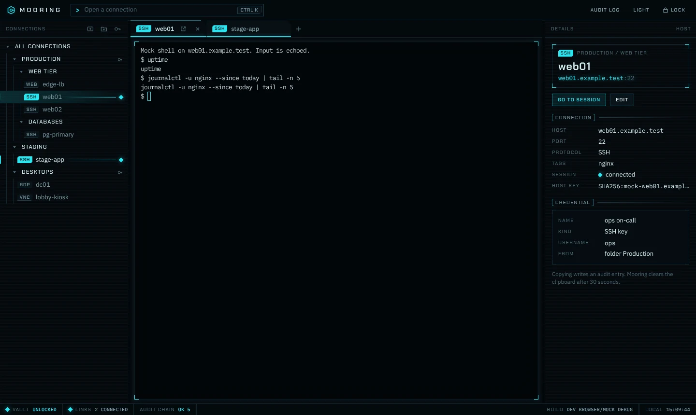

Secure remote access manager for SSH, RDP, VNC, Kubernetes and vSphere
One encrypted vault and one keyboard-first window for every server, desktop and cluster you administer. Open source, local-first, no account, built in Rust.
Pre-release. Phases A1 to A3 are complete: SSH, RDP, VNC, isolated web sessions, read-only Kubernetes, vSphere sync with power and consoles, Vault / OpenBao secret references and encrypted vault sync all work on main after six security reviews. Signed installers, the updater and importers arrive with v0.1.0, which is in progress.

- Release
- checking
- Stars
- checking
- License
- MIT
- Platforms
- macOS, Windows, Linux
- Core
- Rust,
forbid(unsafe) - Reviews
- 6 published
Why Mooring
A remote access manager holds the keys to everything you run. Mooring treats that as the design constraint. Each point below works on main today, is backed by a public decision record and has passed six published security reviews.
-
Argon2id + XChaCha20-Poly1305 vault, sealed field by field
Your master password is stretched with Argon2id, calibrated to about 500 ms on your machine. The derived key wraps a random data key, and every secret field is sealed on its own, bound to its record and field name: a value copied into another row or column fails to decrypt instead of leaking. ADR-0002
-
Bring your own secret manager (Vault / OpenBao)
Point a credential at HashiCorp Vault or OpenBao KV v2 and Mooring fetches the password, SSH key or kubeconfig at connect time, holds it only for the handshake and never writes it to disk. Sign in with a token, AppRole or OIDC; short-lived tokens are renewed in memory and revoked on lock, root tokens are refused. Setup guide, ADR-0016
-
Hash-chained audit log
Unlocks, credential use, password copies, host-key and certificate decisions, sessions and power actions go into a SHA-256 chain you can verify in the app and mirror to syslog. A deleted or edited entry breaks the chain visibly.
-
Trust on first use, with a hard stop on change
SSH offers only modern key exchange, ciphers and MACs: no SHA-1, no CBC, no
ssh-rsa, Terrapin strict-kex on. New SSH host keys and RDP or VNC server certificates need your approval with the SHA-256 fingerprint. A changed key or certificate ends the connection, with no "continue anyway". ADR-0007, ADR-0011 -
Read-only by construction (Kubernetes, vSphere inventory)
The Kubernetes client has a closed route list: list, watch, logs, exec and port-forward are the only requests it can make, so no request that creates, changes or deletes an API object ever leaves your machine. vSphere inventory lands in a read-only synced folder; the only writes are the VM power actions you opt into, each behind a native confirmation. ADR-0014, ADR-0015
-
Memory-safe core; secrets never reach the UI
Every crate is built with
#![forbid(unsafe_code)], cryptography comes only from RustCrypto andring, and parsers for untrusted input are size-capped, property-tested and fuzzed. Keys and decrypted values live in zeroizing memory and are dropped on lock; the interface only ever handles credential IDs, so secrets stay out of the WebView, logs and error messages. ADR-0003 -
Open source, MIT licensed
Source, threat model, architecture decisions and every phase's security review are public. No telemetry, no account, no cloud service required; the optional vault sync encrypts on your device before anything is uploaded.
Features
Status is taken from the project README and changes as work lands. Everything marked available is on main; nothing marked planned works yet.
Vault
- Create, unlock, lock and change the master password
- Argon2id cost calibrated to the host, parameters authenticated in the header
- Auto-lock on idle, sleep, screen lock and hidden window; forwards and tokens dropped on lock
- Encrypted sync to S3-compatible storage: three-way merge, fork and rollback hard stops
- Join a synced vault from a new device with the same master password
- Unlock with Touch ID or Windows Hello (opt-in)
- Portable backup readable with the
ageCLI
Organise
- Folder tree with drag and drop, tags and full-text search
- Credential inheritance down the tree, per-connection override
- Command palette: open any connection by name, host or tag
- Tabs, three-pane layout, dark and light themes, keyboard-first
- Detach any session tab into its own window
- Import from Royal TS, Termius, mRemoteNG, PuTTY and
~/.ssh/config
SSH
- Terminal with WebGL rendering, resize and streaming
- Password, public key, keyboard-interactive and ssh-agent auth
- Host-key TOFU, OpenSSH
known_hostscompatible, mismatch hard stop - Local, remote and SOCKS5 port forwarding with audited exposure
- SFTP browser with streaming transfers; local paths picked in Rust, never by the WebView
- Network tools: TCP port check, ping and traceroute from the inspector
Credentials and audit
- Typed model with 17 credential kinds, each declaring which protocols accept it
- Secret references resolved from HashiCorp Vault / OpenBao at connect time; token, AppRole or OIDC sign-in
- Copy password, cleared after 30 s and on lock, audited
- Audit log viewer with chain verification
- RFC 5424 syslog mirror over UDP, TCP or TLS with chain hash and heartbeat
Desktops and web
- RDP via IronRDP: NLA/CredSSP, certificate TOFU, dynamic resolution, text clipboard both ways
- VNC: RFB 3.8, Tight/ZRLE, VeNCrypt TLS, view-only mode
- Isolated web sessions per connection: own window, partitioned storage, navigation policy
- Reconnect with backoff, screenshot to clipboard, fullscreen, known-certificates manager
Infrastructure
- vSphere: import datacenters, clusters, hosts and VMs into a read-only synced folder with scheduled refresh
- vSphere: VM power state, opt-in power actions behind a native confirmation, vSphere Client and VMRC consoles
- Kubernetes: contexts from kubeconfig or token, pod browser with live watch, RBAC self-review
- Kubernetes:
execshells, log streaming and port-forward on a closed read-only route list
Release
- Pre-release dmg/pkg, exe/msi, deb/rpm/AppImage with cosign-signed
SHA256SUMS, SBOM and provenance - 37 fuzz targets for protocol parsers and API responses, run nightly
- Notarized / Authenticode-signed installers (after v0.1.0, once certificates exist)
- In-app updater with signed manifests
- Homebrew tap; winget after v0.1.0
Screenshots
Taken against the app's mock backend with demo data and example.test hosts. Select one to enlarge.
RDP certificate trust on first use
VNC session in view-only mode
Isolated web session with navigation policy
Kubernetes pods, read-only
Kubernetes container logs
vSphere inventory import
VM power actions and consoles
Secret sources and vault sync
Sync fork hard stop
SSH host-key verification
Command palette
Audit log with chain verification
Seventeen credential kinds, one vault
Every kind in the typed credential model (ADR-0009) is in the vault today. Each declares which protocols accept it, so a VNC password can never be sent to an SSH server, and each secret field is sealed separately. TOTP attaches to any interactive kind as a second factor.
- user_password
- domain_user
- ssh_key
- ssh_agent
- x509
- api_token
- oauth_client
- kubeconfig
- kube_token
- vsphere_user
- vnc_password
- vnc_user_password
- prompt
- external_ref
- sudo_become
- vault_approle
- s3_access_key
external_ref points at a secret in HashiCorp Vault or OpenBao; vault_approle signs in to it and s3_access_key unlocks vault sync. Neither the reference nor the fetched secret is ever written to disk.
Download
Checking GitHub for the latest release.
Every build before v0.1.0 is a pre-release: the bundles are unsigned or ad-hoc signed and there is no in-app updater yet. Verify the cosign signature on SHA256SUMS before you install.
macOS
macOS 11 or later, Apple silicon and Intel
- Disk image
.dmg - Installer package
.pkg
Homebrew
brew install --cask yyasar21/mooring/mooringWindows
Windows 10 1809 or later, x64
- Installer, per user
.exe - MSI, per machine
.msi
winget
Planned after v0.1.0.
Linux
glibc 2.35+, x86_64 and arm64
- Debian, Ubuntu
.deb - Fedora, RHEL
.rpm - Portable
.AppImage
Each release ships SHA256SUMS signed with Sigstore (cosign keyless), SLSA provenance and a CycloneDX SBOM: how to verify a download. Notarized and Authenticode-signed installers, the Homebrew tap and the updater land with v0.1.0. Prefer to build it yourself? Follow the build guide.
How Mooring compares
Mooring is young and the established tools do much more today. This is here to help you decide whether Mooring fits, based on each vendor's public documentation as of November 2026. Check the vendor's site for current details.
| Capability | Mooring | Royal TS / TSX | Devolutions RDM | mRemoteNG | Termius |
|---|---|---|---|---|---|
| License | MIT | Proprietary | Proprietary | GPL-2.0 | Proprietary |
| Price | Free | Paid; limited free edition | Paid; free edition | Free | Freemium |
| macOS | Yes | Yes (Royal TSX) | Yes | No | Yes |
| Windows | Yes | Yes | Yes | Yes | Yes |
| Linux | Yes | No | Yes | No | Yes |
| Mobile | No | Yes | Yes | No | Yes |
| SSH | Yes | Yes | Yes | Yes | Yes |
| RDP and VNC | Yes | Yes | Yes | Yes | No |
| vSphere console | Yes | Yes | Yes | No | No |
| Team sharing | Encrypted multi-device sync (S3) | Yes | Yes | Shared file | Yes |
| Public source code | Yes | No | No | Yes | No |
| Public threat model and reviews | Yes | No | No | No | No |
Roadmap
Phases ship in order; dates are not promised. Every phase ends with exit criteria, a written security review and an updated threat model.
A0 Foundation
Done
Workspace, Tauri shell with strict CSP, vault cryptography, audit log, CI on three operating systems.
A1 Vault, connection tree and SSH
Done, exit 2026-11-04
Vault with auto-lock, folder tree with inheritance, 15 typed credential kinds, SSH with TOFU, port forwarding and SFTP, audit viewer and syslog mirror. Reviews 1 to 4.
A2 RDP, VNC and web sessions
Done, exit 2026-11-04
IronRDP with NLA and certificate TOFU, an own RFB 3.8 client with VeNCrypt, isolated web sessions, detachable tabs, reconnect and screenshots. Review 5.
A3 Infrastructure integrations
Done, exit 2026-11-05
vSphere inventory sync with power actions and consoles, read-only Kubernetes sessions, Vault / OpenBao secret references, encrypted vault sync with a join flow. Review 6.
A4 Release v0.1.0
In progress
- Installers for macOS, Windows and Linux with cosign-signed checksums, SBOMs and build provenance (notarization and Authenticode follow once certificates exist)
- In-app updater: packages signed with the project key and verified before install; checks only when you ask (background check is opt-in)
- Importers for Royal TS, Termius, mRemoteNG, PuTTY and OpenSSH config
- Network tools: TCP port check, ping and traceroute
- Full security pass with zero critical or high findings; clean installs on fresh machines
After A4 Unlock factors and more
Planned
FIDO2
hmac-secretand biometric unlock factors, jump hosts as connections, dynamic Vault secret engines (database, SSH OTP, PKI), winget.B Agent and relay
Planned
Mooring's own remote-desktop agent and an end-to-end encrypted relay.
Questions
Is Mooring free?
Yes. It is open source under the MIT License. There is no paid tier, no account and no telemetry.
Is it ready for production use?
Not yet. Mooring is pre-release software: everything through phase A3 works on main and has passed six security reviews, but installers are not code-signed and there is no updater until v0.1.0. Keep your existing tool alongside it for now.
Does Mooring send my data anywhere?
No. The vault, database, audit log and trusted host keys stay on your machine, and Mooring connects only to the hosts and services you open — plus the GitHub release page when you check for updates. Vault sync is off until you configure a bucket; when on, it uploads one blob encrypted on your device, and the secrets fetched from Vault or OpenBao are never written to disk.
What if I forget my master password?
Your secrets cannot be recovered, by you or by the developers. Names, hosts and tags remain readable so you can rebuild the tree, but passwords and keys are gone. Keep the master password in a password manager or a safe written copy.
Can I use my existing SSH keys and known_hosts?
Paste a private key into an SSH key credential, or use your ssh-agent. Mooring reads the OpenSSH known_hosts format. Importing from ~/.ssh with a file picker is planned.
Can Mooring change my cluster or my VMs?
Not the cluster. The Kubernetes client can only list, watch, read logs, exec and port-forward; everything else is rejected before it leaves your machine, whatever your token allows. On vSphere the inventory is read-only; the only writes are the VM power actions you turn on per connection, each confirmed in a native dialog and written to the audit log.
Which tools can I import from?
Importers for Royal TS, Termius, mRemoteNG, PuTTY and ~/.ssh/config are part of v0.1.0 and are not in a build yet. Follow progress on the roadmap.
How do I report a security problem?
Privately, through GitHub Security Advisories, as described in the security policy. Please do not open a public issue.
Built with AI-assisted agents
Mooring is written with AI coding agents working in defined roles (architect, Rust core, UI, QA, security reviewer, release engineer) under a human maintainer who approves every decision and merge. Every change passes the same gates as human code: tests, lints, dependency and secret scanning, and a written security review. The decision records, reviews and handoff notes in the repository are the audit trail.